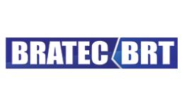

Projetos


Hitstórico profissional
2008
2009
2012
2013
2014
2015
2015
2017
2018
2020
2020
Meu primeiro contato com lógica de programação, C e C++ foi no início da graduação em Engenharia de Produção. Trabalhei com RH, logística, controle de estoque, e mais recentemente tive contato direto com times de tecnologia em uma FinTech. Nessa empresa iniciei analisando a qualidade do atendimento no Customer Sucess, dei alguns treinamentos, mentorei treinadores e fui líder de time. Com olhar mais analítico, apresentei estudos e planos de ação para melhoria da experiência do usuário nas trocas com as lideranças e outros times. Trabalhar com tecnologia virou uma chavinha dentro de mim, de que eu conseguiria aprender e entrar nesse mundo. Adoro resolver problemas, ser desafiada, ter avanços de aprendizado palpáveis, e aprender ensinando. Agora estou focada no estudo de HTML, CSS e JavaScript, e espero futuramente integrar um supertime de Devs!